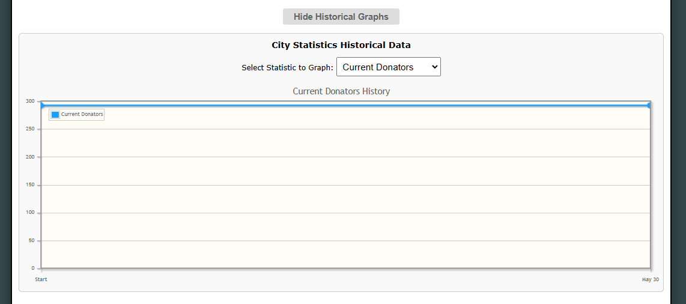

What does it do?
The City Statistics Helper automatically records all 18 primary city statistics (like Government Income, Cash in Bank, and Demographics) every time you view the page. It then builds a beautiful, interactive historical line graph at the top of the page so you can visualize your progression.
Note: Data is logged automatically once per day (using the game's HoboTime timezone). Your historical data is securely backed up if you have Cloud Sync enabled!
How to use it
- Navigate to the City Statistics page.
- At the very top, you will see a collapsible section titled Historical Graph.
- Click the Show Graph button to expand the dashboard.
- Use the dropdown menu to select which of the 18 statistics you want to graph (e.g. Total Registered Population).
- Hover your mouse over the data points on the line graph to see the exact recorded values for specific dates.
Visual Example
Below is an example of the graphing dashboard fully expanded:

How to disable it
If you prefer not to see the historical graph:
- Go to the Preferences page in-game.
- Scroll down to the Hobo Helper Settings section.
- Uncheck the box next to City Statistics History Graph and hit Save.